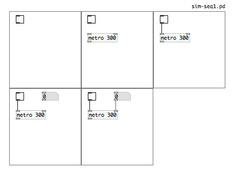
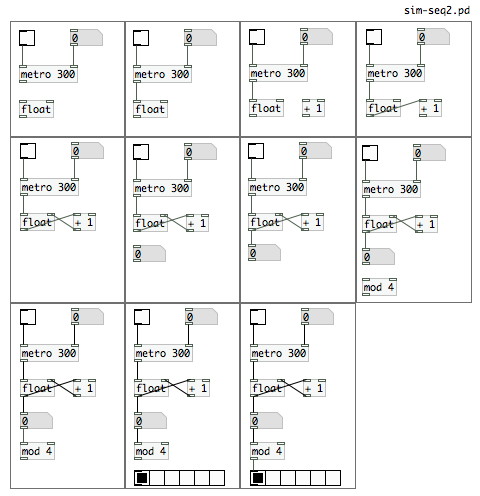
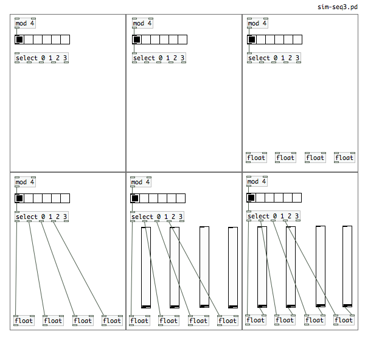
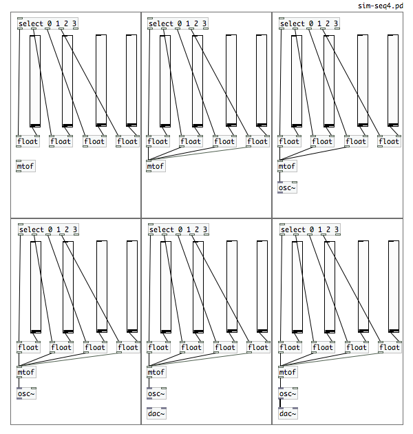
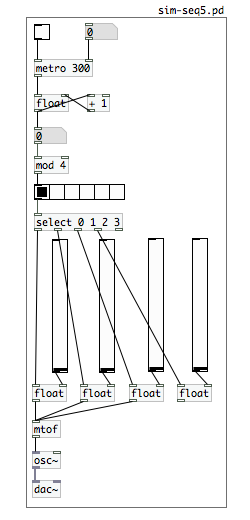

Building a Simple Sequencer: A step by step guide
Basic elements
*Refer to the Interface chapter for understanding the basic elements including Objects, Numbers, Messages, Symbols and Comments.
Using the Interface
*Refer to the Interface chapter for controlling objects, properties and making connections.
1. Create a switch
Put a Toggle into the patch.
* We have chosen to use a toggle in this example, however there are many ways to turn your sequencer on and off, including sending a message to the object.
2. Regulate the timing
a. Put a [metro] object with a creation argument into the patch. A [metro] object sends a bang periodically so here this will regulate the time interval between bangs.
For example, if you put a [metro] with a creation argument of 300, your bangs will output at 300 milisecond intervals.
* The [metro] has two inlets: the first (left) for turning it on and off, the second (right) for altering the creation argument.
b. Connect the outlet of the Toggle to the first inlet of the [metro].
c. Put a number box into the patch. This provides you with a variable and enables you to alter the frequency of your bangs.
d. Connect the outlet of the number box to the second (right) inlet of the [metro].

3. Set up a counter
a. Put in a [float] (this can be written as [float] or [f]). This stores the number on its right inlet, and outputs the result when it receives a bang.
b. Connect the outlet of the [metro] to the inlet of the [float].
c. Put in an addition arithmetic object with a creation argument of 1 [+ 1]. This will set up the counting of the object.
d. Connect the outlet of the [float] to the first inlet of the [+ 1] object and the outlet of the [+ 1] object to the right inlet of the [float]. This will store the number in the [float]'s right inlet and the result will be sent when the [float] receives a bang.
* Be aware of stack overflow which happens when you connect the output of the [+ 1] object to the first inlet of the [float] This creates a feedback loop by sending the creation argument in a neverending circle between the [+ 1] object and the [float] (if you let this go it could crash your system!).
d. Put in a [number box] and connect the [float]'s output to the number box's inlet. This enables you to see what is happening to your creation argument.
* The [number box] is being used in this example as a visual aid and enables you to observe what is happening.
e. Put a [mod] object with a creation argument which will specify the number of steps in your sequencer into the patch. This will define how many steps the sequencer has and distribute the input accordingly. For example, if you put a [mod] with a creation argument of 4, you will build a 4 step sequencer.
f. Put a [horizontal radio] object into the patch. This acts as a visual aid and enables you to see the individual steps of the sequencer as they happen.

4. Set up a distribution channel
a. Put a [select] object with creation arguments numbering the sequencer's steps. This distributes the bangs to the corresponding outlets. For example, put in an object of [select 0 1 2 3] for a 4 step sequencer (start with 0 because mod objects output 0 as well).
* Every time you create a [select] object, the number of outlets will be equal to the number of creation arguments with an extra outlet in order to distribute the surplus signals.
b. Put the number of [float] objects for each step of the sequencer into the patch.
c. Connect the outlets from the [select] object to the inlets of the corresponding [float] objects.
d. Put a vertical slider into the patch for each step of the sequencer. These enable you to adjust the pitch of the individual steps in the sequence. For example, put in four vertical sliders for a four step sequencer.
e. Connect the outlet of the vertical sliders to the second (right) inlets of the [float] objects. This enables you to change the pitch of each step and hear it only when the counter hits that note.

5. Convert a midi number to frequency
a. Put a [mtof] (midi to frequency) object into the patch. This converts the incoming midi numbers to frequency.
b. Connect the outlets of the [float] objects to the inlet of the [mtof] object.
6. Send the frequency to audio
a. Put an [osc~] (oscillator) object with a creation argument into the patch. This outputs audio - ie. a pure sine wave.
* Refer to the Oscillator chapter in Audio Tutorials for more.
b. Connect the outlet of the [mtof] object to the inlet of the [osc~] object.
7. Send the audio to a soundcard
a. Put a [dac~] object into the patch. A [dac~] object is a digital to analogue converter and creates a line out to the sound card.
b. Connect the outlet of the [osc~] object to the inlet of the [dac~] object.

CONGRATULATIONS! You have now created a functioning sequencer in Pure Data.
This is how the sequencer should look:

* We have chosen to use the above elements to set up a sequencer however there are many ways to set one up, including using a table. We're sure you will discover these as you delve deeper into the world of Pure Data.